【暑假杯棋评】东施效颦转世贵妃醉酒——模仿也精彩
【暑假杯棋评】东施效颦转世贵妃醉酒——模仿也精彩
#1 【暑假杯棋评】东施效颦转世贵妃醉酒——模仿也精彩 作者：蓝天蓝 发表时间：2013-8-16 23:44:14
神话一台第一轮棋评
作者：xiaowei
对局链接：http://game.freewzq.com/offlineDisplayGame.html?html=3993129&id=1573
对局结果：神话1台xiaowei白 负 皇朝1台no1黑
神话1台xiaowei开局，皇朝1台no1交换
这次有幸代表家族打一台参加了暑期杯家族争霸赛，因为对一手交换开局定式不太熟悉，担心开局失利，所以赛前临时在网上搜了一局棋作为参考，听说云中漫步水平很高，所以就搜了一局他的棋作参考。参考的棋局如下：
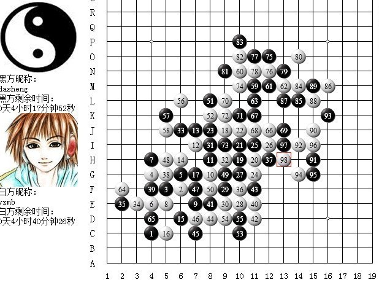
然后具体说我比赛的情况。这轮对皇朝一台，由我开局，我落D3以后对方选择交换，由于我临时参考的棋局对局结果是和棋，所以我认为可以按照这个开局，等对方变招了我再寻求变化，然后我模仿棋局走了白2，对方走了同参考局一样的3，我继续模仿白4，没想到我每模仿一步，对方都迅速模仿出另一步，很奇怪。我就在想，难道他也是那这局做为参考局？这么巧？后来再群里得知，原来这是十番棋挑战赛的对局，进行过讲解分析，真是选巧了！在前面模仿的过程中也想过要变招，比如在第8手的时候，想过去上面抢外势，但是发现怎么走都是黑的外势稍好一点，于是继续模仿了参考局得8手，对黑棋有一定的牵制。
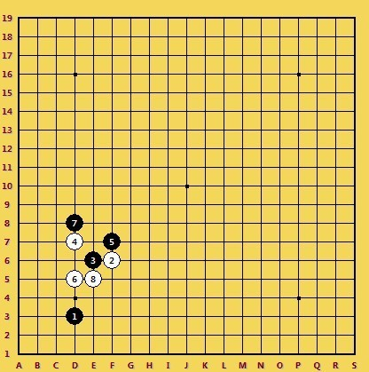
黑9走G5，很好的一步棋，看似白棋有一些进攻的机会，但是都不足以必胜，如果在角落里强攻，有可能黑棋的外势更优。看到参考局得10、11、12以后，觉得这样交换还可以，于是继续模仿了。感觉此局面，黑只是稍优。
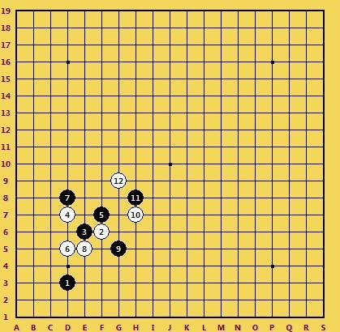
我一直想变一手，走出一步更好的，但我没找到更好的思路求变，只好继续模仿。黑棋继续模仿着白棋，我不知道目的何在，直到25手，跟参考棋局进行的一模一样，如下
此时我计算出，如果继续模仿棋局，黑棋优势很大，群里也有人说是黑棋必胜，我顿时觉得选错了棋局，无奈只能临场发挥了。26手进行了长考，算了很多点 ，都觉得黑棋优势很大，最终选择了I9，一个保守的点，断掉了黑棋的关键线路，计算了黑棋没有简单的必胜。如下
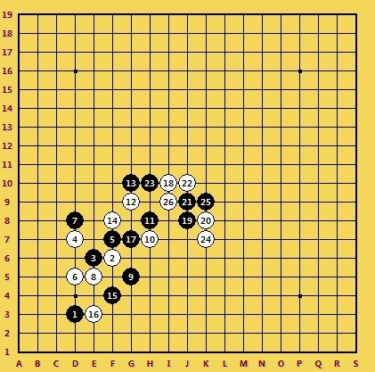
27手对方略加思考I7冲四，28手挡。29手对方走在H9
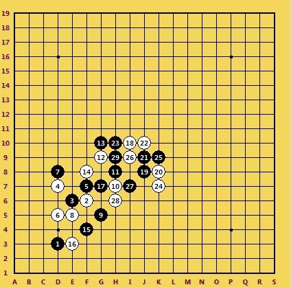
这个29连通上下棋子，威力很大，盘面上黑棋两个活二让我很担心，开始想31挡在F11，消除上面的危机，后来经过仔细计算，发现自己没有二级连攻胜，黑棋如在下方单做棋就防不住了，如下图
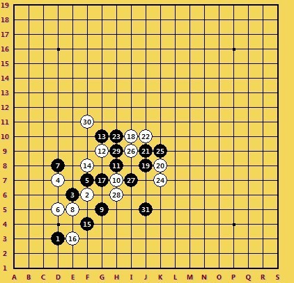
如果30挡在I8，31手在G6活三以后，33手就可以在上面强攻，比如下图这样
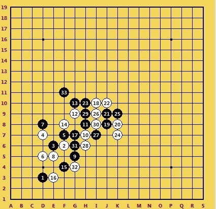
无奈30手选择了G6，挡掉这个活二，但是把黑棋上面放开了，一直担心黑棋在上面攻出妙手。
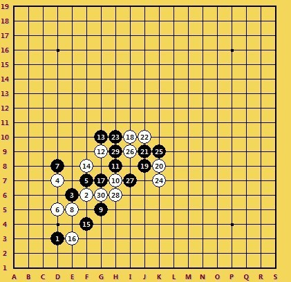
31手的选择对黑棋的进攻是一个考验，如果攻的弱了，则局面转为平衡。对方31走在F10进行进攻，黑棋有一级连攻胜，白棋必须跟防，32走F11盖掉活二。仔细计算了黑棋上方下方均无胜，心里感觉轻松一些了。
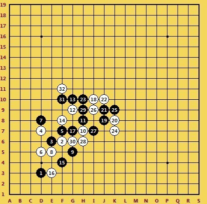
当前局面黑棋没有太好的进攻思路，33手黑棋走J6，这种手段应该是试个应手，看白棋的应付情况再决定如何行棋，很好的一步。
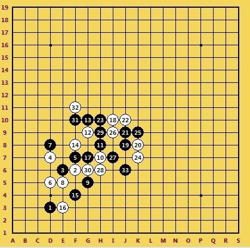
34手我考虑过单防J7，但是想到35走L9以后，黑棋又出头了，右边很优势，就算没有必胜也可以攻全盘，白棋什么都没有。
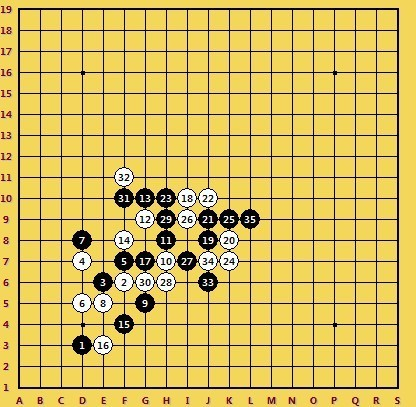
当时我计算到这样一路交换，感觉整个局面不错。
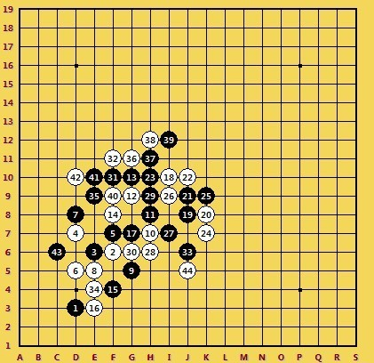
对方行至42都一样，43手做了调整，先把J5给冲掉了，然后挡了C6
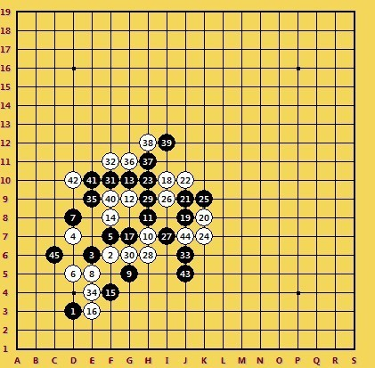
这样的局面以后，黑棋下方保留了一些连接，让白棋有一定的担心，整个盘面趋近平衡。开始想46手彻底把下面防死，比如下到K5，这样下方肯定安全了，后来考虑到黑棋可以在上方做棋，白棋局面还是挺苦的，被人牵着走
［此帖子已被 蓝天蓝 在 2013-8-17 8:19:38 编辑过］
［ 踵酃 于 2013-8-21 2:55:01 时奖励此帖[金币加 100 威望加1］
#2 Re:【暑假杯棋评】东施效颦转世贵妃醉酒——模仿也精彩 作者：与郎共五 发表时间：2013-8-16 23:50:08
没图。。。。#3 Re:【暑假杯棋评】东施效颦转世贵妃醉酒——模仿也精彩 作者：蓝天蓝 发表时间：2013-8-17 7:30:25
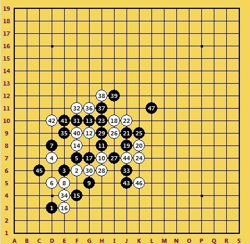
所以46没这么选择，而是盖掉了L10, 47手挡掉四三点。48手还是同样的思路，担心上面黑棋任意做棋，所以直接盖在了J13，黑棋下方也没有二级连攻胜，上方白棋外势稍好，下方黑棋局面较好，盘面还是比较平衡。
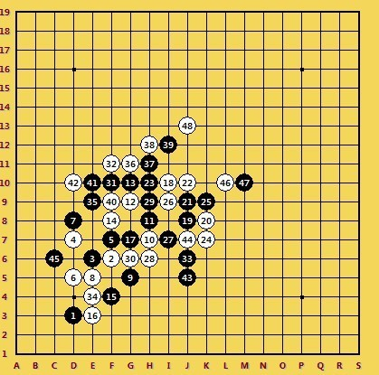
49手C7冲四，51手C5活三，52手挡下。左边基本上交换干净了，53手L11做两个活二，攻防兼备。
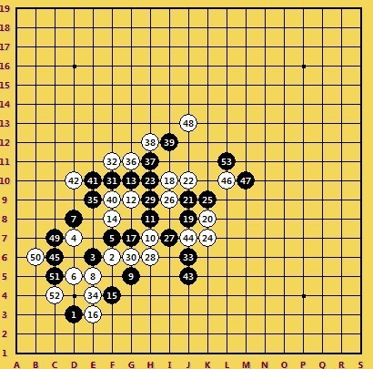
若54挡在N9，55 M12跳3，56挡进去，57 L12做棋黑棋在局部仍然连接较多
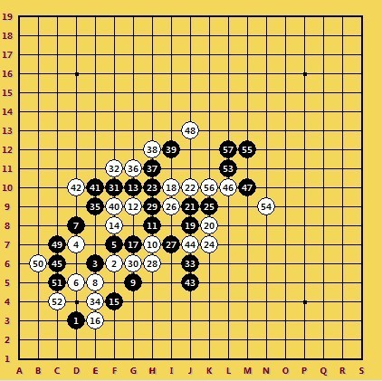
若54手如果单纯去防黑棋的活二，比如防M12，那么黑棋就可以发起另一轮攻击。
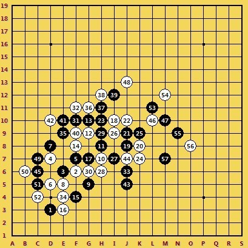
实战54走在J14对攻，55在M9做出一级连攻胜，56挡在N9。
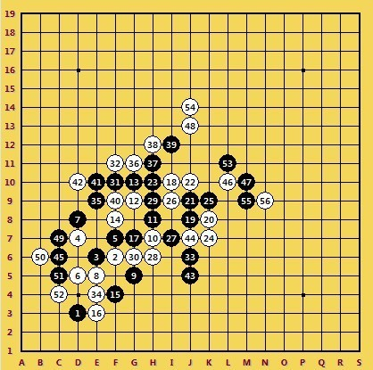
57手黑棋M12形成两个活三，58只能I8冲四防守，60手挡在M11。。
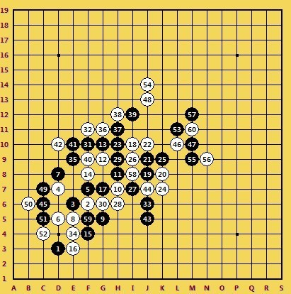
61手K13进攻，62手盖在了N13,63走K15盖掉了白棋的眠三，64走J14冲四防守，66走K11，形成如下局面
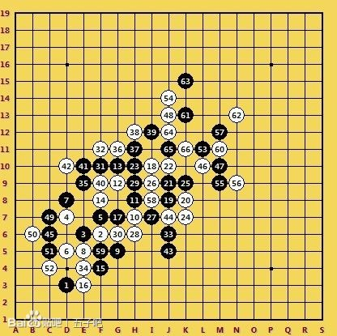
黑棋在上方并无胜，67手K14活三，68手挡K16,69手J15活三，70手挡在了L13，这也是本盘最大的一个失误
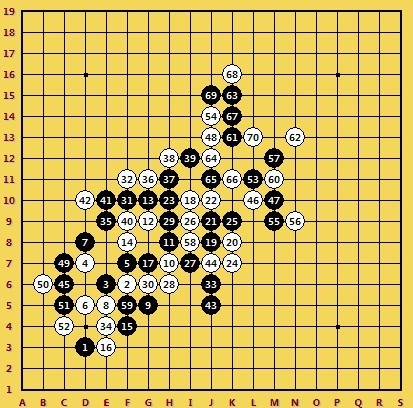
因为多了69 、63这个活二，K10活三，如果挡下面，左上角就有二级连攻胜
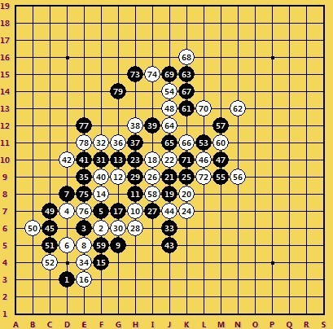
如果72挡上，那么39、65、71这个眠三就可以借到下方，有了这个眠三，下面也刚好有二级连攻胜。实战也只能这么走了，以为72挡下的话简单杀。所以70手犯了错误，挡两侧应该都是和棋局面的。
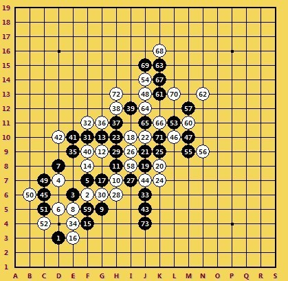
73手开始冲四，因为快没时间了，先弄点时间出来，顺便交换一下。一直到83手
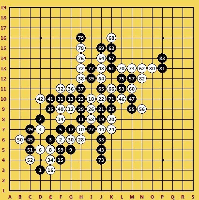
黑棋下方有一级连攻胜，84手H5防守，85手M8冲四，86手反4, 87挡进去，88手最后抵抗一下，到95手认输，历时6个小时。这盘棋又应正了那句话，一着不慎全盘皆输。比赛全图如下
［此帖子已被 蓝天蓝 在 2013-8-17 7:58:42 编辑过］
［ 踵酃同学于 2013-8-21 2:55:48 时花20金币送鲜花一朵］
#4 Re:与郎共五【==Re:【暑假杯棋评】东施效颦转世贵妃醉酒——模仿也精彩==】 作者：蓝天蓝 发表时间：2013-8-17 8:00:07
引用：有图了
原文由 与郎共五 发表于 2013-8-16 23:50:08 :
没图。。。。